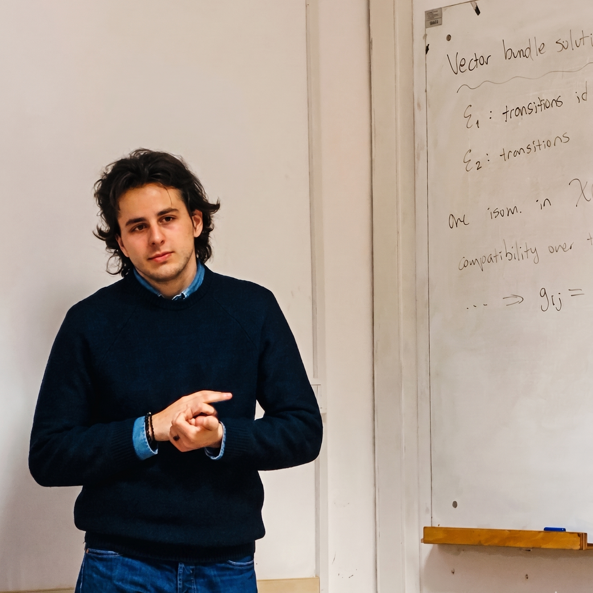

Efe İzbudak
MSc student in mathematics

I am writing my master's thesis on shifted contact structures at Universität Hamburg, under the supervision of Tobias Dyckerhoff. I am interested in higher structures and derived geometry. My current work develops derived contact geometry, the contact counterpart of shifted symplectic geometry.
Read my silenced valedictory address to the METU Class of 2026.
Papers
Preprints
-
Sep 2026
Monodromic Perverse Sheaves on Shifted Contact Stacks arXiv:2609.18796
-
Sep 2026
Shifted Contact Structures on Exact Symplectic Fibrations (with Mehmet Fırat Arıkan and Kadri İlker Berktav) arXiv:2609.08617
-
Jun 2026
Shifted Symplectic Fibrations and Derived Thurston Theorem (with Mehmet Fırat Arıkan and Kadri İlker Berktav) arXiv:2606.21717, submitted
-
Jun 2026
AKSZ Construction for Shifted Contact Structures (with Kadri İlker Berktav) arXiv:2606.13866
-
Jun 2026
Equivariant Contact Darboux Quotients arXiv:2606.11179
-
May 2026
A Derived Legendrian Category for Shifted Contact Stacks (with Kadri İlker Berktav) arXiv:2605.13792, submitted
-
May 2026
Equivariant Quotients of Derived Symplectic Spaces and Legendrian Intersection Theorem (with Kadri İlker Berktav) arXiv:2605.08394, submitted
In preparation
-
Derived Contact Surgery (with Kadri İlker Berktav, Mehmet Fırat Arıkan, and Hena Üçkum)
-
Derived Contactomorphisms (with Mehmet Fırat Arıkan and Kadri İlker Berktav)
-
Relative shifted contact structures and equivariant derived fibrations (with Mehmet Fırat Arıkan and Kadri İlker Berktav)
Earlier work in cryptography
-
Aug 2026
Sub-Cubic Homomorphic Matrix Multiplication via Self-Dual Normal Bases (with Kübra Kaytancı, Ferruh Özbudak, and Erkay Savaş) IACR ePrint 2026/1592, submitted
-
Network Efficient Fully Homomorphic Encryption (with Ali Şah Özcan, Tolun Tosun, and Erkay Savaş) In preparation
Selected talks
-
May 2026
Contractibility in SetΔ METU (notes)
-
Apr 2026
Basics of SetΔ, three talks METU (notes)
-
Dec 2025
Constructing Spaces METU (notes)
-
Dec 2025
Moduli Problems and Stacks METU (notes)
-
Sep 2024
All Morphisms Are Equal, But Some Morphisms Are More Equal Than Others DRP Türkiye, Sabanci University (video, report, slides)
-
2024–2025
Six talks in cryptography, at Sabanci University, METU and online Slides: Sparse Packing for CKKS; Lattice-Based Foundations of Homomorphic Encryption; Fast Multiplication and PLWE-RLWE Equivalence; Cryptanalysis of PLWE Based on Zero-Trace Quadratic Roots; HERMES Ring Packing; Ciphertext-Ciphertext Matrix Multiplication
Education
-
2026–2027
MSc in Mathematics, Universität Hamburg Thesis: Shifted Contact Structures, supervised by Tobias Dyckerhoff; funded by a DAAD-TEV Master's Scholarship; expected September 2027
-
2022–2026
BSc in Mathematics, Middle East Technical University GPA 4.00/4.00, ranked first in the university
Research experience
-
2026–
Higher Structures Group, Middle East Technical University Shifted contact structures on derived stacks, with Kadri İlker Berktav
-
2024–2026
Cryptography and Information Security Group, Sabanci University Algebraic and approximation-theoretic techniques for homomorphic encryption scheme optimization; client-efficient fully homomorphic encryption
-
2024, 2025
Program for Undergraduate Research (PURE), Sabanci University Supervised by Erkay Savaş. Implemented CKKS bootstrapping and GPU-accelerated algorithms; supervised undergraduate implementation of TFHE (2024 report, 2025 report)
Blog
- Jul 2026
Software
I have maintained packages on Gentoo Linux as a proxied maintainer and operate a Tor relay to support global internet freedom. Some of my software:
confluence-latex-injector: a local-first script to compile LaTeX mathematics and brute-force the ADF JSON directly into Confluence.pm: a tiny shell script to manage your passwords securely.gp: a tiny shell script to generate strong, secure passwords.- Gentoo packages I maintain on the ::gentoo repository, such as
sc-imandmutt-wizard. - Other scripts, dotfiles and open-source contributions on GitHub.